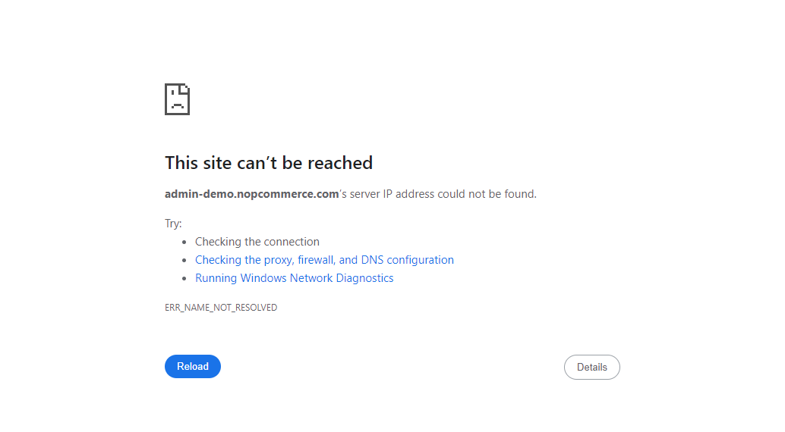

-
Customers
10:38:25 PM / 00:00:10:501 Fail
Customers
01.28.2024 10:38:25 PM 01.28.2024 10:38:36 PM 00:00:10:501 · #test-id=1FailSearch Customer by EmailGiven User Launch Chrome BrowserWhen User opens URL "https://admin-demo.nopcommerce.com/login"StepDefinition.StepDef.addScreenshot(io.cucumber.java.Scenario)Search Customer by EmailAnd User enters Email as "admin@yourstore.com" and Password as "admin"Step skippedAnd Click on LoginStep skippedThen User can view DashboardStep skippedWhen User click on customers menuStep skippedAnd click on customers menu itemStep skippedAnd Enter Customer EmailStep skippedWhen Click on search buttonStep skippedThen User should found Email in the Search tableStep skippedAnd close browserStep skipped -
Login
10:38:36 PM / 00:00:09:902 Fail
Login
01.28.2024 10:38:36 PM 01.28.2024 10:38:46 PM 00:00:09:902 · #test-id=26FailSuccessful Login with Valid CredentialsGiven User Launch Chrome BrowserWhen User opens URL "https://admin-demo.nopcommerce.com/login"StepDefinition.StepDef.addScreenshot(io.cucumber.java.Scenario)And User enters Email as "admin@yourstore.com" and Password as "admin"Step skippedAnd Click on LoginStep skippedThen Page Title should be "Dashboard / nopCommerce administration"Step skippedWhen User click on Log out linkStep skippedThen Page Title should be "Your store. Login"Step skippedAnd close browserStep skipped
-
org.openqa.selenium.remote.UnreachableBrowserException
2 tests
org.openqa.selenium.remote.UnreachableBrowserException
2 failedStatus Timestamp TestName Fail 22:38:42 PM When User opens URL "https://admin-demo.nopcommerce.com/login" Login.Successful Login with Valid Credentials.When User opens URL "https://admin-demo.nopcommerce.com/login"Fail 22:38:46 PM StepDefinition.StepDef.addScreenshot(io.cucumber.java.Scenario) Login.Successful Login with Valid Credentials.StepDefinition.StepDef.addScreenshot(io.cucumber.java.Scenario) -
org.openqa.selenium.WebDriverException
1 tests
org.openqa.selenium.WebDriverException
1 failedStatus Timestamp TestName Fail 22:38:35 PM When User opens URL "https://admin-demo.nopcommerce.com/login" Customers.Search Customer by Email.When User opens URL "https://admin-demo.nopcommerce.com/login"
-
@Sanity
2 tests
@Sanity
2 failedStatus Timestamp TestName Fail 22:38:25 PM Search Customer by Email Customers.Search Customer by EmailFail 22:38:36 PM Successful Login with Valid Credentials Login.Successful Login with Valid Credentials
Started
Jan 28, 2024 10:38:23 PM
Ended
Jan 28, 2024 10:38:46 PM
Features Passed
0
Features Failed
2
Features
Scenarios
Steps
Timeline
Tags
| Name | Passed | Failed | Skipped | Others | Passed % |
|---|---|---|---|---|---|
| @Sanity | 0 | 2 | 0 | 0 | 0% |
System/Environment
| Name | Value |
|---|---|
| AppName | CucumberFreamework |
| user | Satyashri Pisal |
| build | 0.1 |